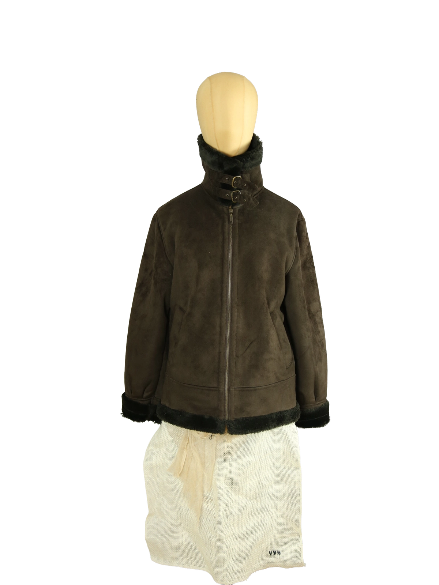

1 / 14Aus dem kuratierten Archiv von Disorder119. Diese Balmain Jacke zeigt sich als klassisch geschnittenes Wintermodell mit klarer, reduzierter Linienführung und zurückhaltender Eleganz. Die braune Oberfläche in Veloursoptik wirkt ruhig und gleichmäßig, mit einer weichen, matten Haptik. Das innenliegende, dunkle Kunstfellfutter sorgt für Wärme und einen klaren Kontrast zu der glatten Außenstruktur. Kragen, Saum und Ärmelabschlüsse sind ebenfalls mit dem Kunstfell eingefasst und rahmen die Silhouette präzise ein. Der hohe Stehkragen mit doppeltem Riegelverschluss verleiht dem Modell eine funktionale, leicht utilitäre Anmutung. Der durchgehende Frontreißverschluss sowie die sauber gesetzten Nähte unterstreichen die hochwertige Verarbeitung. Die Passform ist ausgewogen und körpernah, ohne einzuengen, und eignet sich für einen klaren, zeitlosen Look. Details: Marke: Balmain Farbe: Braun Größe: 38 Passform: Normal Verschluss: Reißverschluss, Riegel am Kragen Material: Synthetisches Veloursmaterial mit Kunstfellfutter (laut Materialetikett) Herstellungsland: Frankreich Fotografie & Passform: Das Kleidungsstück wurde auf unserer Standard-Schneiderpuppe fotografiert, die wir zur konsistenten Darstellung aller Kleidungsstücke verwenden. Maße der Schneiderpuppe: Brustumfang 89 cm Taillenumfang 66 cm Hüftumfang 89 cm Schulterbreite 38 cm Zustand: Sehr guter Zustand mit leichten, materialtypischen Tragespuren. Rechtliche Hinweise: Verkauf als gebrauchtes Kleidungsstück. Die Beschreibung erfolgt nach bestem Wissen und Gewissen. Farbnuancen und Oberflächenwirkungen können aufgrund von Lichtverhältnissen bei der Fotografie sowie unterschiedlicher Bildschirmdarstellungen leicht vom Original abweichen. Disorder119 steht für sorgfältig kuratierte Designerstücke mit Fokus auf Authentizität, Qualität und zeitlose Relevanz.
Disorder119 · Kuratiertes Archiv für Designer-, Vintage- und Contemporary-Mode. Jedes Stück wird einzeln ausgewählt, fotografiert und beschrieben.